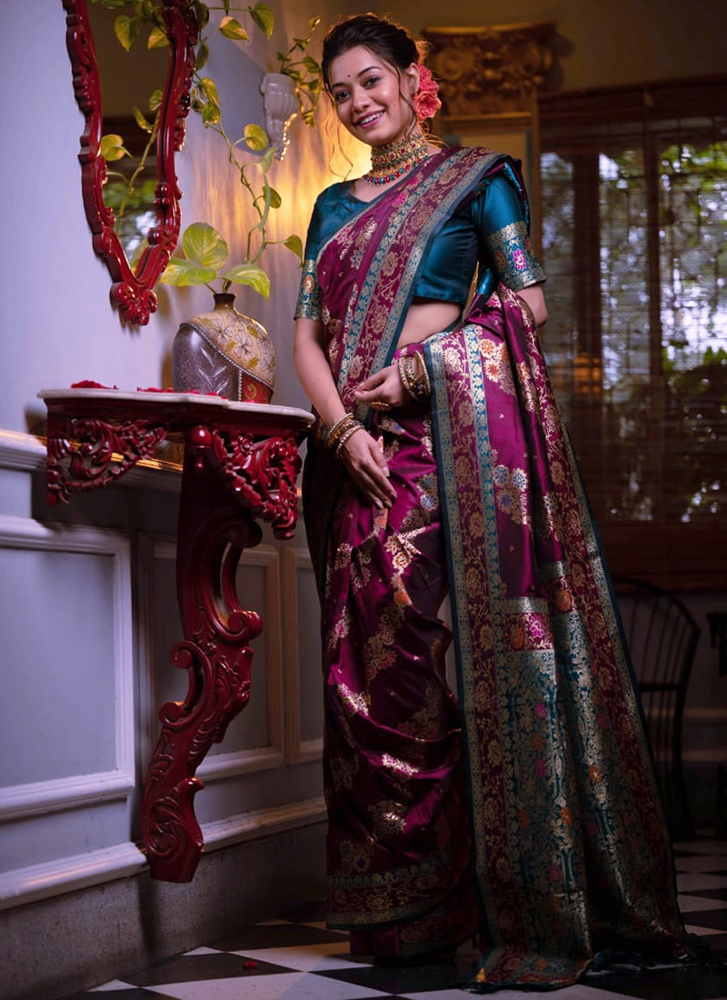
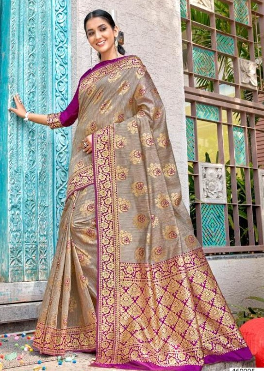
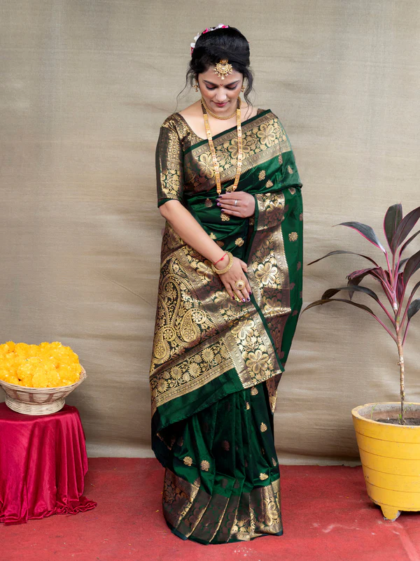

BANARSI SAREE
- Uttar Pradesh




Banarasi Saree is one of the traditional Indian dresses from the different varieties of sarees available that are adored and worn by women of the Indian subcontinent. It is also known as the "Punjabi saree". The term Banarasi is often used to refer to the saree made in Varanasi, Uttar Pradesh. The saree is usually made of silk, georgette, tussar, organza, chiffon, and cotton. The saree can be draped in many ways and can be worn with blouses that are often embroidered with motifs from nature like flowers or birds.
The Banarasi Saree is a symbol of the traditional Indian culture and is one of the most famous sarees in India. The Banarasi sarees are known for their fine weave, intricate patterns, and vibrant colours.